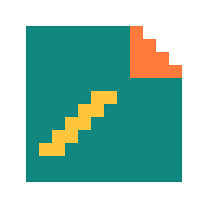
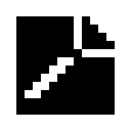

Idea: a canvas with a folded corner (a pixel stair, so it stays pixel art) and a stroke drawn across it. Teal body, tangerine fold, sunny stroke. The wordmark is set in a pixel face for "pix" and a rounded grotesque for "fold". Wordmark letters are live text in this mockup and will be outlined in the final files.